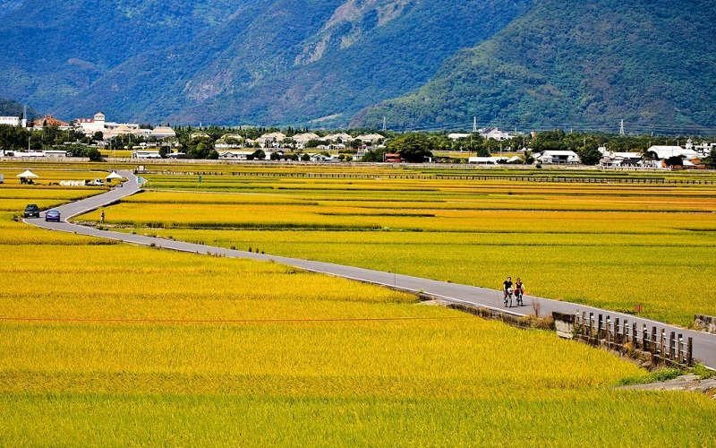
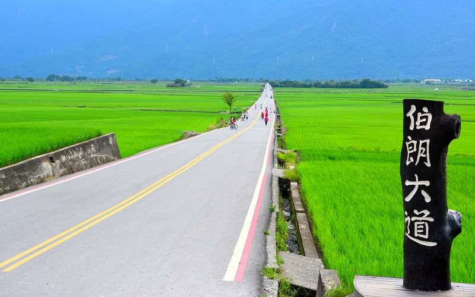
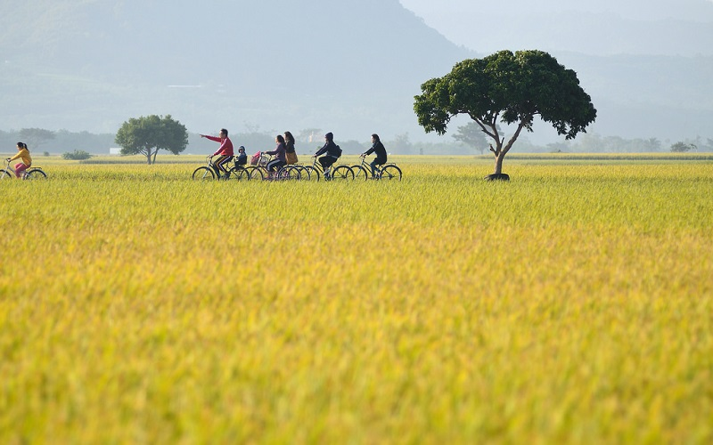
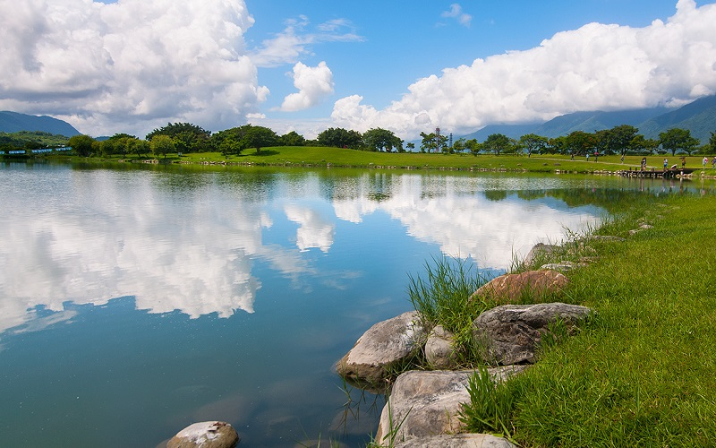
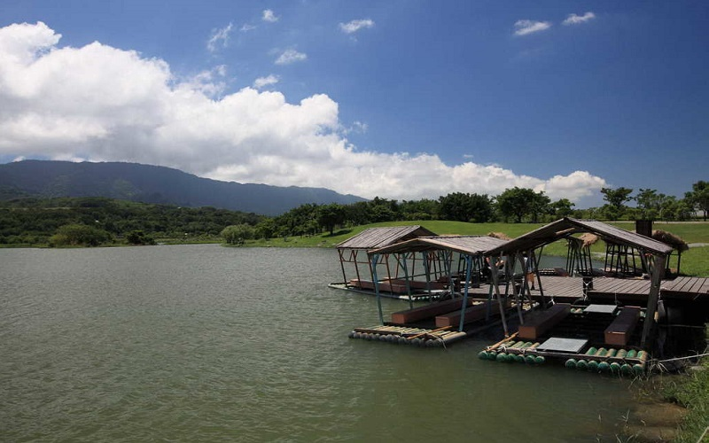
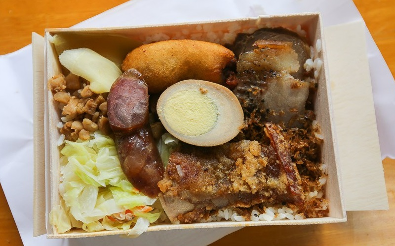

Chishang
Taitung County
Chishang Township
    Chishang is a rural township in Taitung County. Located at the Huadong Valley, which is with abundant rainfall
and clear sources of water, Chishang is famous for growing the Chishang rice, which is considered to be the best rice
in Taiwan. When harvest at autumn, the fields here will turn golden. The Chishang lunch box is also a must-eat gourmet
for tourists. The Mr. Brown Avenue is known for being the scene of the advertisement of the Mr. Brown coffee,
and the Takeshi Kaneshiro tree is especially a popular spot there. The Takeshi Kaneshiro tree is a Bishop wood
which named after the movie star Takeshi Kaneshiro. This tree has become Taiwan's best known one since
the summer of 2013 after Takeshi Kaneshiro sipped tea in its shade in an EVA Airways TV commercial.
The Dapo Pond is an inland freshwater swamp in Chishang. It was not only with diverse ecology
but also suitable for activities such as biking, bird watching and fishing. If you come in summer, you can join the
Bamboo-Raft Festival and take the bamboo raft to tour around the pond.
- Best seasons: Summer and Autumn.
- Transportation:
The nearest train station from this region is the Chishang station.